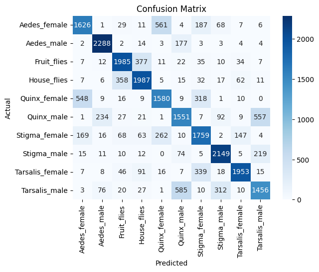
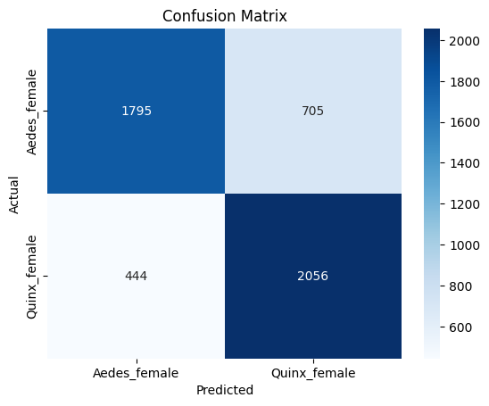
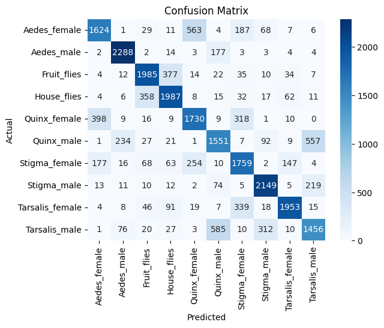
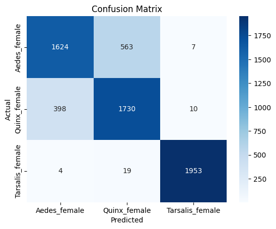

Modeling RandomForest untuk InsectSound#
Gunakan fitur hasil preprocessing (.csv) lalu latih & evaluasi RandomForest.
import pandas as pd
from pathlib import Path
from sklearn.model_selection import train_test_split, RandomizedSearchCV
from sklearn.ensemble import RandomForestClassifier
from sklearn.metrics import accuracy_score,classification_report, confusion_matrix
import joblib
from scipy.fft import fft, fftfreq
from scipy.io import arff
import numpy as np
from scipy.stats import randint
import librosa
Data Preprocessing#
data_train, meta_train = arff.loadarff('./InsectSound/InsectSound_TRAIN.arff')
data_test, meta_test = arff.loadarff('./InsectSound/InsectSound_TEST.arff')
df_train_time_domain = pd.DataFrame(data_train)
df_test_time_domain = pd.DataFrame(data_test)
df_train_time_domain['target'] = df_train_time_domain['target'].str.decode('utf-8')
df_test_time_domain['target'] = df_test_time_domain['target'].str.decode('utf-8')
df_train_time_domain
| att1 | att2 | att3 | att4 | att5 | att6 | att7 | att8 | att9 | att10 | ... | att592 | att593 | att594 | att595 | att596 | att597 | att598 | att599 | att600 | target | |
|---|---|---|---|---|---|---|---|---|---|---|---|---|---|---|---|---|---|---|---|---|---|
| 0 | 0.000153 | -6.578439e-05 | 0.000038 | -0.000029 | 0.000020 | -0.000006 | 0.000004 | 0.000002 | 0.000003 | -0.000003 | ... | -0.000003 | 0.000010 | -0.000006 | -0.000006 | -0.000010 | 0.000011 | -4.337056e-07 | 0.000013 | -0.000024 | Aedes_female |
| 1 | -0.000029 | 6.673935e-07 | 0.000035 | -0.000119 | -0.000141 | -0.000131 | -0.000251 | -0.000253 | -0.000261 | -0.000309 | ... | 0.001548 | 0.001509 | 0.001564 | 0.001499 | 0.001487 | 0.001473 | 1.498447e-03 | 0.001388 | 0.001597 | Aedes_female |
| 2 | -0.019499 | 4.194278e-02 | 0.192660 | 0.232282 | 0.132188 | 0.013040 | -0.035715 | -0.066381 | -0.070153 | -0.050134 | ... | 0.087443 | 0.234516 | 0.242373 | 0.130852 | 0.042257 | -0.005834 | -7.398573e-02 | -0.047510 | -0.037126 | Aedes_female |
| 3 | 0.000000 | 0.000000e+00 | 0.000000 | 0.000000 | 0.000000 | 0.000000 | 0.000000 | 0.000000 | 0.000000 | 0.000000 | ... | 0.000000 | 0.000000 | 0.000000 | 0.000000 | 0.000000 | 0.000000 | 0.000000e+00 | 0.000000 | 0.000000 | Aedes_female |
| 4 | 0.000023 | -7.772223e-05 | 0.000111 | -0.000096 | 0.000043 | 0.000023 | -0.000083 | 0.000119 | -0.000104 | 0.000058 | ... | -0.000201 | -0.000108 | -0.000037 | 0.000045 | 0.000112 | 0.000165 | 2.464727e-04 | 0.000267 | 0.000361 | Aedes_female |
| ... | ... | ... | ... | ... | ... | ... | ... | ... | ... | ... | ... | ... | ... | ... | ... | ... | ... | ... | ... | ... | ... |
| 24995 | -0.038172 | -6.510722e-02 | -0.050728 | -0.057015 | -0.059738 | -0.062525 | -0.041550 | -0.029602 | -0.071081 | -0.085259 | ... | 0.015370 | 0.011291 | 0.007858 | 0.000036 | -0.009820 | -0.016796 | -2.788711e-02 | -0.035114 | -0.043915 | Tarsalis_male |
| 24996 | -0.004521 | -5.507769e-03 | -0.003324 | -0.002715 | -0.001349 | -0.000586 | 0.000324 | 0.000365 | 0.000511 | 0.000505 | ... | -0.002677 | -0.002820 | -0.002841 | -0.002871 | -0.002874 | -0.002720 | -2.747607e-03 | -0.002502 | -0.002782 | Tarsalis_male |
| 24997 | 0.000001 | 1.723497e-05 | 0.000005 | -0.000009 | -0.000001 | -0.000002 | -0.000010 | 0.000010 | -0.000008 | 0.000007 | ... | -0.007817 | -0.007665 | -0.007593 | -0.007307 | -0.007141 | -0.006762 | -6.597169e-03 | -0.005984 | -0.006218 | Tarsalis_male |
| 24998 | -0.000047 | -5.119860e-05 | -0.000045 | -0.000071 | -0.000065 | -0.000030 | -0.000031 | -0.000056 | -0.000067 | -0.000051 | ... | -0.130079 | -0.118307 | -0.106510 | -0.110060 | -0.106163 | -0.085816 | -6.483196e-02 | -0.050146 | -0.114638 | Tarsalis_male |
| 24999 | -0.011246 | -1.924826e-02 | -0.020571 | -0.023844 | -0.025468 | -0.026934 | -0.027441 | -0.028248 | -0.028063 | -0.027184 | ... | -0.000118 | 0.000033 | 0.000108 | -0.000019 | -0.000115 | 0.000014 | 8.791329e-05 | -0.000013 | -0.000106 | Tarsalis_male |
25000 rows × 601 columns
from scipy.fft import rfft, rfftfreq
def extract_features_v2(signal: np.ndarray) -> dict:
fft_values = np.abs(rfft(signal))
fft_freqs = rfftfreq(len(signal), 1 / 6000)
mfcc = librosa.feature.mfcc(y=signal, sr=6000, n_mfcc=13)
return fft_values.tolist() + mfcc.flatten().tolist()
def build_feature_df_v2(df_in: pd.DataFrame) -> pd.DataFrame:
rows = []
for row in df_in.itertuples(index=False):
signal = np.asarray(row, dtype=float)
feats = extract_features_v2(signal)
rows.append(feats)
return pd.DataFrame(rows)
X_train = df_train_time_domain.drop('target', axis=1)
y_train = df_train_time_domain['target']
X_train = build_feature_df_v2(X_train)
X_test = df_test_time_domain.drop('target', axis=1)
y_test = df_train_time_domain['target']
X_test = build_feature_df_v2(X_test)
C:\Users\grubg\AppData\Roaming\Python\Python312\site-packages\librosa\core\spectrum.py:266: UserWarning: n_fft=2048 is too large for input signal of length=600
warnings.warn(
---------------------------------------------------------------------------
KeyboardInterrupt Traceback (most recent call last)
Cell In[6], line 3
1 X_train = df_train_time_domain.drop('target', axis=1)
2 y_train = df_train_time_domain['target']
----> 3 X_train = build_feature_df_v2(X_train)
5 X_test = df_test_time_domain.drop('target', axis=1)
6 y_test = df_train_time_domain['target']
Cell In[5], line 15, in build_feature_df_v2(df_in)
13 for row in df_in.itertuples(index=False):
14 signal = np.asarray(row, dtype=float)
---> 15 feats = extract_features_v2(signal)
16 rows.append(feats)
18 return pd.DataFrame(rows)
Cell In[5], line 6, in extract_features_v2(signal)
4 fft_values = np.abs(rfft(signal))
5 fft_freqs = rfftfreq(len(signal), 1 / 6000)
----> 6 mfcc = librosa.feature.mfcc(y=signal, sr=6000, n_mfcc=13)
8 return fft_values.tolist() + mfcc.flatten().tolist()
File ~\AppData\Roaming\Python\Python312\site-packages\librosa\feature\spectral.py:1993, in mfcc(y, sr, S, n_mfcc, dct_type, norm, lifter, mel_norm, **kwargs)
1846 """Mel-frequency cepstral coefficients (MFCCs)
1847
1848 .. warning:: If multi-channel audio input ``y`` is provided, the MFCC
(...) 1989 >>> fig.colorbar(img2, ax=[ax[1]])
1990 """
1991 if S is None:
1992 # multichannel behavior may be different due to relative noise floor differences between channels
-> 1993 S = power_to_db(melspectrogram(y=y, sr=sr, norm = mel_norm, **kwargs))
1995 fft = get_fftlib()
1996 M: np.ndarray = fft.dct(S, axis=-2, type=dct_type, norm=norm)[
1997 ..., :n_mfcc, :
1998 ]
File ~\AppData\Roaming\Python\Python312\site-packages\librosa\feature\spectral.py:2148, in melspectrogram(y, sr, S, n_fft, hop_length, win_length, window, center, pad_mode, power, **kwargs)
2135 S, n_fft = _spectrogram(
2136 y=y,
2137 S=S,
(...) 2144 pad_mode=pad_mode,
2145 )
2147 # Build a Mel filter
-> 2148 mel_basis = filters.mel(sr=sr, n_fft=n_fft, **kwargs)
2150 melspec: np.ndarray = np.einsum("...ft,mf->...mt", S, mel_basis, optimize=True)
2151 return melspec
File ~\AppData\Roaming\Python\Python312\site-packages\librosa\filters.py:239, in mel(sr, n_fft, n_mels, fmin, fmax, htk, norm, dtype)
236 upper = ramps[i + 2] / fdiff[i + 1]
238 # .. then intersect them with each other and zero
--> 239 weights[i] = np.maximum(0, np.minimum(lower, upper))
241 if isinstance(norm, str):
242 if norm == "slaney":
243 # Slaney-style mel is scaled to be approx constant energy per channel
KeyboardInterrupt:
X_train
| 0 | 1 | 2 | 3 | 4 | 5 | 6 | 7 | 8 | 9 | ... | 317 | 318 | 319 | 320 | 321 | 322 | 323 | 324 | 325 | 326 | |
|---|---|---|---|---|---|---|---|---|---|---|---|---|---|---|---|---|---|---|---|---|---|
| 0 | 0.005107 | 0.003539 | 0.004149 | 0.011252 | 0.003870 | 0.003155 | 0.042232 | 0.154303 | 0.345499 | 0.599401 | ... | -4.095212 | -4.197743 | 62.648136 | 63.888668 | -63.474093 | -64.317209 | -3.816917 | -6.269735 | 19.317396 | 20.483596 |
| 1 | 0.276832 | 0.890035 | 1.616741 | 2.549686 | 1.589538 | 0.527910 | 0.680788 | 0.465630 | 0.519724 | 0.369701 | ... | -28.675469 | -28.785781 | -6.357625 | -8.372556 | 70.978469 | 71.827293 | 111.085970 | 109.507699 | -2.204282 | -3.515510 |
| 2 | 0.534062 | 1.852436 | 2.883891 | 2.586658 | 0.420808 | 1.707434 | 1.508141 | 0.309464 | 0.939695 | 0.622383 | ... | -20.226410 | -18.691676 | -0.325396 | -3.622865 | 9.973030 | 14.435670 | 62.655595 | 59.141480 | 35.095852 | 38.291816 |
| 3 | 0.401689 | 1.139451 | 5.240613 | 4.823131 | 1.369612 | 3.438861 | 3.060122 | 1.713568 | 0.930940 | 0.727151 | ... | -13.368533 | -18.459821 | -9.010316 | -8.754565 | 2.842191 | 1.929718 | 133.361574 | 139.556724 | 84.108706 | 85.742414 |
| 4 | 0.053369 | 1.676477 | 4.024979 | 3.542231 | 0.911268 | 1.725657 | 2.026754 | 1.463920 | 0.787932 | 0.433794 | ... | 2.970260 | 2.488006 | -1.869456 | -2.324577 | 52.999338 | 53.163958 | 76.691293 | 75.682660 | -7.602454 | -8.448108 |
| ... | ... | ... | ... | ... | ... | ... | ... | ... | ... | ... | ... | ... | ... | ... | ... | ... | ... | ... | ... | ... | ... |
| 24995 | 2.373291 | 3.465740 | 4.685130 | 4.794371 | 4.013827 | 3.043128 | 2.308609 | 1.751479 | 1.221384 | 0.754629 | ... | 58.792026 | 54.990256 | -30.014661 | -34.719269 | -23.941354 | -24.767210 | 24.524109 | 31.091952 | -27.659927 | -26.416182 |
| 24996 | 0.110527 | 4.393731 | 6.324274 | 11.898503 | 5.066463 | 2.787707 | 7.776737 | 3.446319 | 0.985013 | 2.038244 | ... | 47.063761 | 52.634117 | 70.114603 | 72.722794 | -9.059812 | -9.802853 | -27.146194 | -27.419409 | 10.995747 | 11.449263 |
| 24997 | 0.175345 | 0.318406 | 0.576880 | 1.069494 | 1.796735 | 2.453382 | 2.704819 | 2.427631 | 1.809450 | 1.220844 | ... | 116.719365 | 110.201192 | 37.700392 | 33.032443 | -33.700549 | -34.871602 | 4.067087 | 4.590823 | -10.879973 | -8.847670 |
| 24998 | 1.169293 | 1.949760 | 2.118444 | 2.599885 | 3.938090 | 6.307116 | 9.738017 | 11.861605 | 11.155698 | 8.172643 | ... | 20.472523 | 22.400071 | -22.952498 | -22.139587 | -1.884693 | -2.953150 | 14.719894 | 13.974854 | -30.441784 | -26.188216 |
| 24999 | 0.251705 | 0.244470 | 0.950827 | 1.741800 | 1.954889 | 2.095265 | 0.871725 | 0.766267 | 0.760063 | 0.858038 | ... | 75.309056 | 79.487740 | -14.016013 | -12.566909 | -48.364157 | -50.297442 | 29.330572 | 30.634593 | -16.067811 | -17.850980 |
25000 rows × 327 columns
Modeling Random Forest#
Global Classifier#
random_forest = RandomForestClassifier(n_estimators=100, random_state=42)
random_forest.fit(X_train, y_train)
RandomForestClassifier(random_state=42)In a Jupyter environment, please rerun this cell to show the HTML representation or trust the notebook.
On GitHub, the HTML representation is unable to render, please try loading this page with nbviewer.org.
Parameters
| n_estimators | 100 | |
| criterion | 'gini' | |
| max_depth | None | |
| min_samples_split | 2 | |
| min_samples_leaf | 1 | |
| min_weight_fraction_leaf | 0.0 | |
| max_features | 'sqrt' | |
| max_leaf_nodes | None | |
| min_impurity_decrease | 0.0 | |
| bootstrap | True | |
| oob_score | False | |
| n_jobs | None | |
| random_state | 42 | |
| verbose | 0 | |
| warm_start | False | |
| class_weight | None | |
| ccp_alpha | 0.0 | |
| max_samples | None | |
| monotonic_cst | None |
y_pred_search = random_forest.predict(X_test)
print("Accuracy (best RF):", accuracy_score(y_test, y_pred_search))
print(classification_report(y_test, y_pred_search))
Accuracy (best RF): 0.73336
precision recall f1-score support
Aedes_female 0.68 0.65 0.67 2500
Aedes_male 0.86 0.92 0.89 2500
Fruit_flies 0.78 0.79 0.78 2500
House_flies 0.76 0.79 0.78 2500
Quinx_female 0.65 0.63 0.64 2500
Quinx_male 0.63 0.62 0.63 2500
Stigma_female 0.65 0.70 0.68 2500
Stigma_male 0.80 0.86 0.83 2500
Tarsalis_female 0.87 0.78 0.82 2500
Tarsalis_male 0.64 0.58 0.61 2500
accuracy 0.73 25000
macro avg 0.73 0.73 0.73 25000
weighted avg 0.73 0.73 0.73 25000
import joblib
joblib.dump(random_forest, 'random_forest.pkl')
['random_forest.pkl']
import seaborn as sns
import matplotlib.pyplot as plt
sns.heatmap(confusion_matrix(y_test, y_pred_search), annot=True, fmt='d', cmap='Blues', xticklabels=random_forest.classes_, yticklabels=random_forest.classes_)
plt.xlabel('Predicted')
plt.ylabel('Actual')
plt.title('Confusion Matrix')
plt.show()

Quinx vs Aedes Classifier#
quinx_vs_aedes = ['Aedes_female', 'Quinx_female']
qva_train = X_train.copy()
qva_train['target'] = y_train
qva_train = qva_train[qva_train['target'].isin(quinx_vs_aedes)]
X_qva_train = qva_train.drop('target', axis=1)
y_qva_train = qva_train['target']
qva_test = X_test.copy()
qva_test['target'] = y_test
qva_test = qva_test[qva_test['target'].isin(quinx_vs_aedes)]
X_qva_test = qva_test.drop('target', axis=1)
y_qva_test = qva_test['target']
from sklearn.svm import SVC
from sklearn.pipeline import Pipeline
from sklearn.preprocessing import StandardScaler
svc = Pipeline([
('scaler', StandardScaler()),
('svm', SVC(kernel='rbf', C=1.0, probability=True,
class_weight='balanced', random_state=42))
])
svc.fit(X_qva_train, y_qva_train)
Pipeline(steps=[('scaler', StandardScaler()),
('svm',
SVC(class_weight='balanced', probability=True,
random_state=42))])In a Jupyter environment, please rerun this cell to show the HTML representation or trust the notebook. On GitHub, the HTML representation is unable to render, please try loading this page with nbviewer.org.
Parameters
| steps | [('scaler', ...), ('svm', ...)] | |
| transform_input | None | |
| memory | None | |
| verbose | False |
Parameters
| copy | True | |
| with_mean | True | |
| with_std | True |
Parameters
| C | 1.0 | |
| kernel | 'rbf' | |
| degree | 3 | |
| gamma | 'scale' | |
| coef0 | 0.0 | |
| shrinking | True | |
| probability | True | |
| tol | 0.001 | |
| cache_size | 200 | |
| class_weight | 'balanced' | |
| verbose | False | |
| max_iter | -1 | |
| decision_function_shape | 'ovr' | |
| break_ties | False | |
| random_state | 42 |
joblib.dump(svc, 'svc.pkl')
['svc.pkl']
y_qva_pred = svc.predict(X_qva_test)
report = classification_report(y_qva_test, y_qva_pred)
print(report)
precision recall f1-score support
Aedes_female 0.80 0.72 0.76 2500
Quinx_female 0.74 0.82 0.78 2500
accuracy 0.77 5000
macro avg 0.77 0.77 0.77 5000
weighted avg 0.77 0.77 0.77 5000
import seaborn as sns
import matplotlib.pyplot as plt
sns.heatmap(confusion_matrix(y_qva_test, y_qva_pred), annot=True, fmt='d', cmap='Blues', xticklabels=['Aedes_female', 'Quinx_female'], yticklabels=['Aedes_female', 'Quinx_female'])
plt.xlabel('Predicted')
plt.ylabel('Actual')
plt.title('Confusion Matrix')
plt.show()

Classifier Gabungan#
class SeranggaClassifier:
def __init__(self, all_models):
self.models = all_models
def predict(self, X: pd.DataFrame):
X = X.copy()
# Level 1: RF untuk semua data
rf_pred = self.models["rf"].predict(X)
# Siapkan output akhir (urutannya sama!)
final_pred = pd.Series(rf_pred, index=X.index, dtype=object)
# ❗ KELAS YANG TIDAK DIPERCAYA RF
need_refine = pd.Series(rf_pred).isin(
["Aedes_female", "Quinx_female"]
).values
# Level 2: hanya untuk Aedes & Quinx
if need_refine.any():
final_pred[need_refine] = self.models["svc"].predict(
X.loc[need_refine]
)
return final_pred.tolist()
classifiier = SeranggaClassifier({
'rf' : random_forest,
'svc': svc
})
y_pred_new = classifiier.predict(X_test)
joblib.dump(classifiier, 'serangga.pkl')
['serangga.pkl']
EVALUASI#
report = classification_report(y_test, y_pred_new)
print(report)
precision recall f1-score support
Aedes_female 0.73 0.65 0.69 2500
Aedes_male 0.86 0.92 0.89 2500
Fruit_flies 0.78 0.79 0.78 2500
House_flies 0.76 0.79 0.78 2500
Quinx_female 0.67 0.69 0.68 2500
Quinx_male 0.63 0.62 0.63 2500
Stigma_female 0.65 0.70 0.68 2500
Stigma_male 0.80 0.86 0.83 2500
Tarsalis_female 0.87 0.78 0.82 2500
Tarsalis_male 0.64 0.58 0.61 2500
accuracy 0.74 25000
macro avg 0.74 0.74 0.74 25000
weighted avg 0.74 0.74 0.74 25000
import seaborn as sns
import matplotlib.pyplot as plt
sns.heatmap(confusion_matrix(y_test, y_pred_new), annot=True, fmt='d', cmap='Blues', xticklabels=random_forest.classes_, yticklabels=random_forest.classes_)
plt.xlabel('Predicted')
plt.ylabel('Actual')
plt.title('Confusion Matrix')
plt.show()

import pandas as pd
from sklearn.metrics import classification_report, confusion_matrix
y_pred = pd.Series(y_pred_new, name="y_pred")
y_true = pd.Series(y_test, name="y_true")
female_classes = ["Aedes_female", "Quinx_female", 'Tarsalis_female']
# Mask HARUS dari ground truth
female_mask = y_true.isin(female_classes)
y_true_female = y_true[female_mask]
y_pred_female = y_pred[female_mask]
print("Jumlah data female:", len(y_true_female))
print(y_true_female.value_counts())
print("\n=== Classification Report (Female Only) ===")
print(
classification_report(
y_true_female,
y_pred_female,
labels=female_classes,
zero_division=0
)
)
Jumlah data female: 7500
y_true
Aedes_female 2500
Quinx_female 2500
Tarsalis_female 2500
Name: count, dtype: int64
=== Classification Report (Female Only) ===
precision recall f1-score support
Aedes_female 0.80 0.65 0.72 2500
Quinx_female 0.75 0.69 0.72 2500
Tarsalis_female 0.99 0.78 0.87 2500
micro avg 0.84 0.71 0.77 7500
macro avg 0.85 0.71 0.77 7500
weighted avg 0.85 0.71 0.77 7500
import seaborn as sns
import matplotlib.pyplot as plt
sns.heatmap(confusion_matrix(y_true_female, y_pred_female, labels=female_classes), annot=True, fmt='d', cmap='Blues', xticklabels=female_classes, yticklabels=female_classes)
plt.xlabel('Predicted')
plt.ylabel('Actual')
plt.title('Confusion Matrix')
plt.show()
